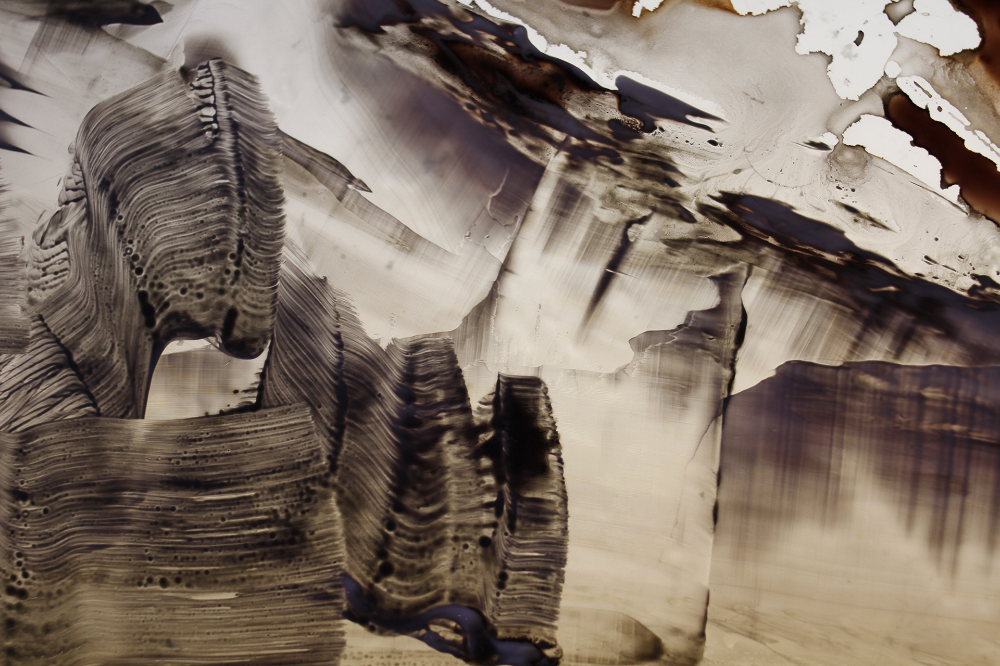
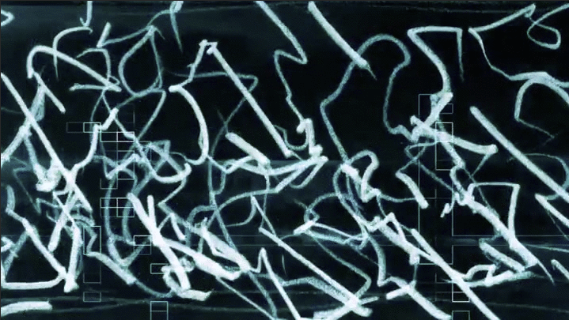

digital still from Pull the dawn from the night

from Western Mythology at Walter Maciel Galley

James Buckhouse is an artist practicing at the intersection of the visual and performing arts. He has exhibited at the Whitney Biennial, the Solomon R. Guggenheim’s Works & Process Series, The Institute of Contemporary Art in London, The Berkeley Art Museum, and the Dia Center. He has collaborated with leading choreographers at the New York City Ballet, San Francisco Ballet, Oregon Ballet Theatre, and Pennsylvania Ballet.
| - |
|
- |